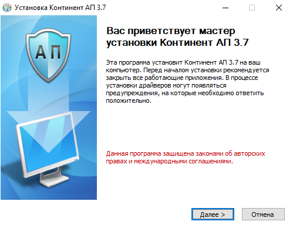
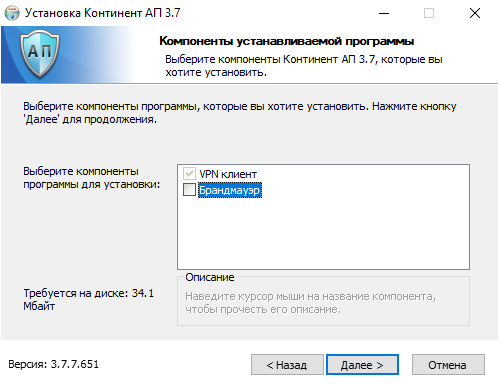
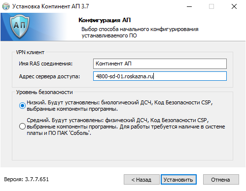
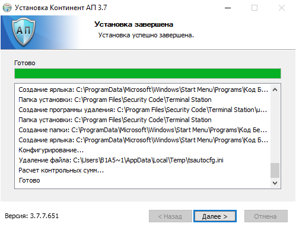
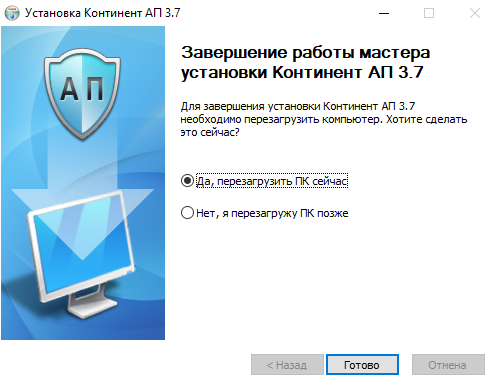

Настройка рабочей станции для работы с СУФД-онлайн
Необходимое ПО для настройки
Обратите внимание: в связи с системными требованиями ПО Континент-АП установка возможна только на операционные системы версии Pro и выше. Установка на операционные системы версий Home\Starter\Basic проходит, но фактически программа неработоспособна.
Для работы с СУФД понадобится следующее программное обеспечение:
- КриптоПро 4.0.9944 и выше (работа с КриптоПро 5 пока официально не подтверждена)
- Континент-АП 3.7.7.651 (за получением нужно обратиться в отдел)
- КриптоПро ЭЦП Браузер плагин 2.0
- Актуальная версия одного из следующих браузеров:
- Internet Explorer 11
- Mozilla Firefox
- Google Chrome
Установка КриптоПро 4.0
- Запустите установочный файл
- Нажмите "Далее" и введите лицензионный номер. В случае если лицензионный номер еще не получен можно продолжить установку - будет установлена бесплатная пробная лицензия сроком действия 3 месяца. Подробнее о получении лицензии тут.
- Следуйте шагам мастера до окончания установки.
Установка и настройка Континент-АП
- Запустите установочный файл
 -
Следуя шагам мастера внесите следующие изменения:
- В разделе "Компоненты устанавливаемой программы" снимите флажок с пункта "Брандмауэр"
 - В разделе "Конфигурация АП" в строке "Адрес сервера" введите адрес:
4800-sd-01.roskazna.ru
 -
Следуйте шагам мастера до завершения установки
 -
Перезагрузите ПК - перезагрузка обязательна, без нее возможны проблемы с сетевым соединением и с работой мыши.

- В разделе "Компоненты устанавливаемой программы" снимите флажок с пункта "Брандмауэр"
-
После перезагрузки выполните накопление энтропии
Создание запроса на сертификат Континент-АП
- Нажав правой клавишей мышки по значку Континента-АП выберите криптопровайдер по умолчанию - Код Безопасности
- В том же меню выберите Создание запроса на пользовательский сертификат
Установка КриптоПро ЭЦП браузер плагин
- Запустите установочный файл
- Следуйте шагам мастера. В случае если плагин более ранней версии уже установлен в системе рекомендуется обновиться.
- Сделайте настройку доверенных узлов:
- Зайдите в настройки узлов
- Добавьте узел:
http://*.ufk48.roskazna.local
Установка корневых сертификатов
Можете воспользоваться утилитой, либо установить сертификаты вручную.
Установка личных сертификатов
Дополнительные настройки
Строки в файле hosts:
10.48.202.67 s4800w04 s4800w04.ufk48.roskazna.local sufd.s4800w04.ufk48.roskazna.local
10.48.202.66 s4800w03 s4800w03.ufk48.roskazna.local sufd.s4800w03.ufk48.roskazna.local
Вход на портал
Адрес для входа в СУФД: http://s4800w04.ufk48.roskazna.local:28081
Можете сделать закладку:
Либо указать его в качестве стартовой страницы: